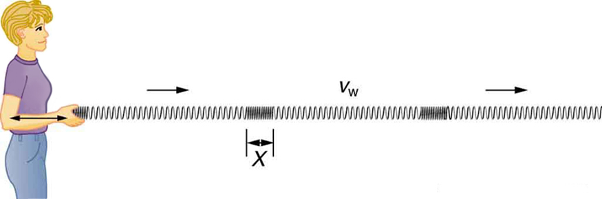
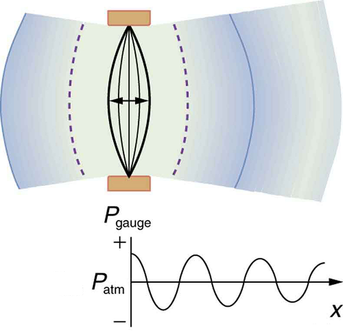
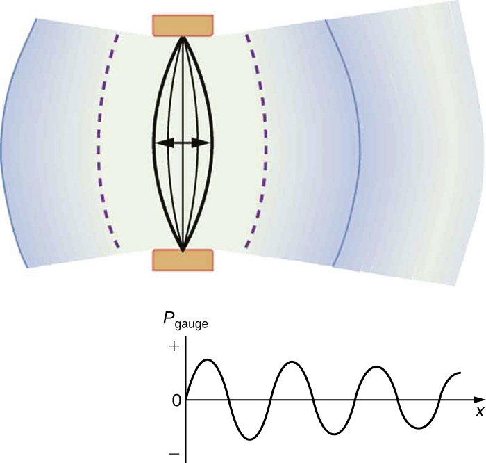
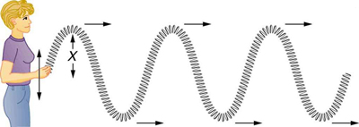
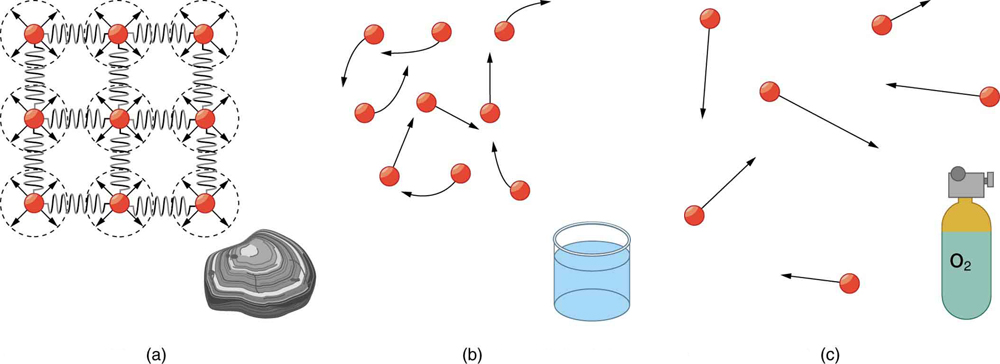
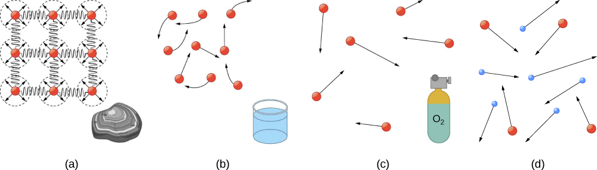

U12-28 — Waves
Use the higher-resolution pinned longitudinal-wave diagram (875×289 versus 400×132), with the same physical content; no separate third-party credit in the caption.
Before

Applied for 1.1

Reviewed 55 sections, including the remaining Kinematics differences, all of Dynamics, and all five Unit 2 chapters. Applied 35 scoped correction records. The plasma expansion is held for your decision; no chapter or section restructuring was performed. This is a development draft. The full-book backport and release PDF checks remain unfinished.
Current 1.1 development textbook · Held coverage decision · Retained differences and limitations
Use upstream lunar acceleration 1.625 m/s²; round the associated weight of a 1.0-kg mass consistently to 1.6 N.
Assuming the mass of an object is kept intact, it will remain the same, regardless of its location. However, because weight depends on the acceleration due to gravity, the weight of an object can change when the object enters into a region with stronger or weaker gravity. For example, the acceleration due to gravity on the Moon is (which is much less than the acceleration due to gravity on Earth, ). If you measured your weight on Earth and then measured your weight on the Moon, you would find that you “weigh” much less, even though you do not look any skinnier. This is because the force of gravity is weaker on the Moon. In fact, when people say that they are “losing weight,” they really mean that they are losing “mass” (which in turn causes them to weigh less).
Assuming the mass of an object is kept intact, it will remain the same, regardless of its location. However, because weight depends on the acceleration due to gravity, the weight of an object can change when the object enters into a region with stronger or weaker gravity. For example, the acceleration due to gravity on the Moon is (which is much less than the acceleration due to gravity on Earth, ). If you measured your weight on Earth and then measured your weight on the Moon, you would find that you “weigh” much less, even though you do not look any skinnier. This is because the force of gravity is weaker on the Moon. In fact, when people say that they are “losing weight,” they really mean that they are losing “mass” (which in turn causes them to weigh less).
Use upstream lunar acceleration 1.625 m/s²; round the associated weight of a 1.0-kg mass consistently to 1.6 N.
The acceleration due to gravity varies slightly over the surface of Earth, so that the weight of an object depends on location and is not an intrinsic property of the object. Weight varies dramatically if one leaves Earth’s surface. On the Moon, for example, the acceleration due to gravity is only . A 1.0-kg mass thus has a weight of 9.8 N on Earth and only about 1.7 N on the Moon.
The acceleration due to gravity varies slightly over the surface of Earth, so that the weight of an object depends on location and is not an intrinsic property of the object. Weight varies dramatically if one leaves Earth’s surface. On the Moon, for example, the acceleration due to gravity is only . A 1.0-kg mass thus has a weight of 9.8 N on Earth and only about 1.6 N on the Moon.
Qualify the supporting force as normal only when perpendicular to the contact surface; preserve the local explanation of other forces and acceleration.
We must conclude that whatever supports a load, be it animate or not, must supply an upward force equal to the weight of the load, as we assumed in a few of the previous examples. The force supporting a load is perpendicular to the surface of contact between the load and its support, and this force is called a normal force, often indicated with symbol (Please do not confuse this with the abbreviation for newton, the unit of force, N). The word normal means perpendicular to a surface. The normal force is not always equal to the object's weight, if there are other forces acting on the object, or if the object is accelerating, so that the net force is not zero.
We must conclude that whatever supports a load, be it animate or not, must supply an upward force equal to the weight of the load, as we assumed in a few of the previous examples. If the force supporting a load is perpendicular to the surface of contact between the load and its support, this force is called a normal force, often indicated with symbol (Please do not confuse this with the abbreviation for newton, the unit of force, N). The word normal means perpendicular to a surface. The normal force is not always equal to the object's weight, if there are other forces acting on the object, or if the object is accelerating, so that the net force is not zero.
Use the upstream surface-relative description of friction or its unitless spelling correction.
Image description: The figure shows a crate on a flat surface, and a magnified view of a bottom corner of the crate and the supporting surface. The magnified view shows that there is roughness in the two surfaces in contact with each other. A black arrow points toward the right, away from the crate, and it is labeled as the direction of motion or attempted motion. A red arrow pointing toward the left is located near the bottom left corner of the crate, at the interface between that corner and the supporting surface. The red arrow is labeled as f, representing friction between the two surfaces in contact with each other.
Frictional forces, such as , always oppose motion or attempted motion between objects in contact. Friction arises in part because of the roughness of the surfaces in contact, as seen in the expanded view. In order for the object to move, it must rise to where the peaks can skip along the bottom surface. Thus a force is required just to set the object in motion. Some of the peaks will be broken off, also requiring a force to maintain motion. Much of the friction is actually due to attractive forces between molecules making up the two objects, so that even perfectly smooth surfaces are not friction-free. Such adhesive forces also depend on the substances the surfaces are made of, explaining, for example, why rubber-soled shoes slip less than those with leather soles.
Image description: The figure shows a crate on a flat surface, and a magnified view of a bottom corner of the crate and the supporting surface. The magnified view shows that there is roughness in the two surfaces in contact with each other. A black arrow points toward the right, away from the crate, and it is labeled as the direction of motion or attempted motion. A red arrow pointing toward the left is located near the bottom left corner of the crate, at the interface between that corner and the supporting surface. The red arrow is labeled as f, representing friction between the two surfaces in contact with each other.
Frictional forces, such as , always oppose motion or attempted motion between surfaces in contact. Friction arises in part because of the roughness of the surfaces in contact, as seen in the expanded view. In order for the object to move, it must rise to where the peaks can skip along the bottom surface. Thus a force is required just to set the object in motion. Some of the peaks will be broken off, also requiring a force to maintain motion. Much of the friction is actually due to attractive forces between molecules making up the two objects, so that even perfectly smooth surfaces are not friction-free. Such adhesive forces also depend on the substances the surfaces are made of, explaining, for example, why rubber-soled shoes slip less than those with leather soles.
Use the upstream surface-relative description of friction or its unitless spelling correction.
If two systems are in contact and moving relative to one another, then the friction between them is called kinetic friction.
If two surfaces are in contact and moving relative to one another, then the friction between them is called kinetic friction.
Use the upstream surface-relative description of friction or its unitless spelling correction.
Friction is a force that opposes relative motion between systems in contact.
Friction is a force that opposes relative motion between surfaces in contact.
Use the upstream surface-relative description of friction or its unitless spelling correction.
Friction is a force that is around us all the time that opposes relative motion between systems in contact but also allows us to move (which you have discovered if you have ever tried to walk on ice). While a common force, the behavior of friction is actually very complicated and is still not completely understood. We have to rely heavily on observations for whatever understandings we can gain. However, we can still deal with its more elementary general characteristics and understand the circumstances in which it behaves.
Friction is a force that is around us all the time that opposes relative motion between surfaces in contact but also allows us to move (which you have discovered if you have ever tried to walk on ice). While a common force, the behavior of friction is actually very complicated and is still not completely understood. We have to rely heavily on observations for whatever understandings we can gain. However, we can still deal with its more elementary general characteristics and understand the circumstances in which it behaves.
Use the upstream surface-relative description of friction or its unitless spelling correction.
The equations given earlier include the dependence of friction on materials and the normal force. The direction of friction is always opposite that of motion, parallel to the surface between objects, and perpendicular to the normal force. For example, if the crate you try to push (with a force parallel to the floor) has a mass of 100 kg, then the normal force would be equal to its weight, , perpendicular to the floor. If the coefficient of static friction is 0.45, you would have to exert a force parallel to the floor greater than to move the crate. Once there is motion, friction is less and the coefficient of kinetic friction might be 0.30, so that a force of only 290 N () would keep it moving at a constant speed. If the floor is lubricated, both coefficients are considerably less than they would be without lubrication. Coefficient of friction is a unit less quantity with a magnitude usually between 0 and 1.0. The coefficient of the friction depends on the two surfaces that are in contact.
The equations given earlier include the dependence of friction on materials and the normal force. The direction of friction is always opposite that of motion, parallel to the surface between objects, and perpendicular to the normal force. For example, if the crate you try to push (with a force parallel to the floor) has a mass of 100 kg, then the normal force would be equal to its weight, , perpendicular to the floor. If the coefficient of static friction is 0.45, you would have to exert a force parallel to the floor greater than to move the crate. Once there is motion, friction is less and the coefficient of kinetic friction might be 0.30, so that a force of only 290 N () would keep it moving at a constant speed. If the floor is lubricated, both coefficients are considerably less than they would be without lubrication. Coefficient of friction is a unitless quantity with a magnitude usually between 0 and 1.0. The coefficient of the friction depends on the two surfaces that are in contact.
Apply the upstream surface-relative friction wording, retaining the grammatical phrase contact surface between systems.
One of the simpler characteristics of friction is that it is parallel to the contact surface between systems and always in a direction that opposes motion or attempted motion of the systems relative to each other. If two systems are in contact and moving relative to one another, then the friction between them is called kinetic friction. For example, friction slows a hockey puck sliding on ice. But when objects are stationary, static friction can act between them; the static friction is usually greater than the kinetic friction between the objects.
One of the simpler characteristics of friction is that it is parallel to the contact surface between systems and always in a direction that opposes motion or attempted motion of the systems relative to each other. If two surfaces are in contact and moving relative to one another, then the friction between them is called kinetic friction. For example, friction slows a hockey puck sliding on ice. But when objects are stationary, static friction can act between them; the static friction is usually greater than the kinetic friction between the surfaces.
Update the stated gravitational constant (and the associated force between two 1-kg masses) from 6.673 to the pinned upstream 6.674 × 10⁻¹¹. Retain lower-precision worked calculations.
Update the stated gravitational constant (and the associated force between two 1-kg masses) from 6.673 to the pinned upstream 6.674 × 10⁻¹¹. Retain lower-precision worked calculations.
where F is the magnitude of the gravitational force. is the gravitational constant, given by .
where F is the magnitude of the gravitational force. is the gravitational constant, given by .
Update the stated gravitational constant (and the associated force between two 1-kg masses) from 6.673 to the pinned upstream 6.674 × 10⁻¹¹. Retain lower-precision worked calculations.
in SI units. Note that the units of are such that a force in newtons is obtained from , when considering masses in kilograms and distance in meters. For example, two 1.000 kg masses separated by 1.000 m will experience a gravitational attraction of . This is an extraordinarily small force. The small magnitude of the gravitational force is consistent with everyday experience. We are unaware that even large objects like mountains exert gravitational forces on us. In fact, our body weight is the force of attraction of the entire Earth on us with a mass of .
in SI units. Note that the units of are such that a force in newtons is obtained from , when considering masses in kilograms and distance in meters. For example, two 1.000 kg masses separated by 1.000 m will experience a gravitational attraction of . This is an extraordinarily small force. The small magnitude of the gravitational force is consistent with everyday experience. We are unaware that even large objects like mountains exert gravitational forces on us. In fact, our body weight is the force of attraction of the entire Earth on us with a mass of .
Use the upstream gravitational-potential-energy definition without restricting it to height on Earth.
energy associated with height of objects on the Earth
the energy an object has due to its position in a gravitational field
Use capital X for the maximum displacement (amplitude), consistent with the local notation and upstream correction.
is the maximum deformation, which corresponds to the amplitude of the wave. The point on the wave would either be at the very top or the very bottom of the curve.
is the maximum deformation, which corresponds to the amplitude of the wave. The point on the wave would either be at the very top or the very bottom of the curve.
Use capital X for the maximum displacement (amplitude), consistent with the local notation and upstream correction.
A babysitter is pushing a child on a swing. At the point where the swing reaches , where would the corresponding point on a wave of this motion be located?
A babysitter is pushing a child on a swing. At the point where the swing reaches , where would the corresponding point on a wave of this motion be located?
Adopt the upstream repair to malformed reciprocal-second exponents, and correct the remaining transposition: sqrt(72.6)/(2π) = 1.3561/s, rounding to the unchanged 1.36 Hz. Only this defective equation is re-represented.
Apply upstream deep-water qualification and circular water-particle motion, instead of purely up-and-down motion.
Many people think that water waves push water from one direction to another. In fact, the particles of water tend to stay in one location, save for moving up and down due to the energy in the wave. The energy moves forward through the water, but the water stays in one place. If you feel yourself pushed in an ocean, what you feel is the energy of the wave, not a rush of water.
Many people think that water waves push water from one direction to another. In fact, in water waves far from shore, the particles of water tend to stay in one location, save for moving in circles due to the energy in the wave. The energy moves forward through the water, but the water stays in one place. If you feel yourself pushed in an ocean, far from the shore, what you feel is the energy of the wave, not a rush of water.
Correct f₂ = v/λ₂ = v/L = 2f₁, and call this the first overtone (second harmonic). The local MathML and all other formulas are retained.
The lowest frequency, called the fundamental frequency, is thus for the longest wavelength, which is seen to be . Therefore, the fundamental frequency is . In this case, the overtones or harmonics are multiples of the fundamental frequency. As seen in [existing reference], the first harmonic can easily be calculated since . Thus, . Similarly, , and so on. All of these frequencies can be changed by adjusting the tension in the string. The greater the tension, the greater is and the higher the frequencies. This observation is familiar to anyone who has ever observed a string instrument being tuned. We will see in later chapters that standing waves are crucial to many resonance phenomena, such as in sounding boxes on string instruments.
The lowest frequency, called the fundamental frequency, is thus for the longest wavelength, which is seen to be . Therefore, the fundamental frequency is . In this case, the overtones or harmonics are multiples of the fundamental frequency. As seen in [existing reference], the first overtone can easily be calculated since . Thus, . Similarly, , and so on. All of these frequencies can be changed by adjusting the tension in the string. The greater the tension, the greater is and the higher the frequencies. This observation is familiar to anyone who has ever observed a string instrument being tuned. We will see in later chapters that standing waves are crucial to many resonance phenomena, such as in sounding boxes on string instruments.
Use upstream caption naming the first and second overtones, matching the figure’s f₂ and f₃ modes.
Image description: first overtone is shown as the wave length if lambda two is L and there are three nodes and two antinodes in the figure. For first overtone the frequency f two is equal to two times f one.
First and second harmonic frequencies are shown.
Image description: first overtone is shown as the wave length if lambda two is L and there are three nodes and two antinodes in the figure. For first overtone the frequency f two is equal to two times f one.
First and second overtones are shown.
Use the upstream replacement for two incorrect linear proportionality claims (oscillator frequency varies with square roots) and qualify the density comparison by similar rigidity.
[existing reference] makes it apparent that the speed of sound varies greatly in different media. The speed of sound in a medium is determined by a combination of the medium’s rigidity (or compressibility in gases) and its density. The more rigid (or less compressible) the medium, the faster the speed of sound. This observation is analogous to the fact that the frequency of a simple harmonic motion is directly proportional to the stiffness of the oscillating object. The greater the density of a medium, the slower the speed of sound. This observation is analogous to the fact that the frequency of a simple harmonic motion is inversely proportional to the mass of the oscillating object. The speed of sound in air is low, because air is compressible. Because liquids and solids are relatively rigid and very difficult to compress, the speed of sound in such media is generally greater than in gases.
[existing reference] makes it apparent that the speed of sound varies greatly in different media. The speed of sound in a medium is determined by a combination of the medium’s rigidity (or compressibility in gases) and its density. The more rigid (or less compressible) the medium, the faster the speed of sound. For materials that have similar rigidities, sound will travel faster through the one with the lower density because the sound energy is more easily transferred from particle to particle. The speed of sound in air is low, because air is compressible. Because liquids and solids are relatively rigid and very difficult to compress, the speed of sound in such media is generally greater than in gases.
Apply upstream caption repair: the flywheel keeps the bus from slowing down due to friction.
Image description: The figure shows a bus carrying a large flywheel on its board in which rotational kinetic energy is stored.
Experimental vehicles, such as this bus, have been constructed in which rotational kinetic energy is stored in a large flywheel. When the bus goes down a hill, its transmission converts its gravitational potential energy into . It can also convert translational kinetic energy, when the bus stops, into . The flywheel’s energy can then be used to accelerate, to go up another hill, or to keep the bus from going against friction.
Image description: The figure shows a bus carrying a large flywheel on its board in which rotational kinetic energy is stored.
Experimental vehicles, such as this bus, have been constructed in which rotational kinetic energy is stored in a large flywheel. When the bus goes down a hill, its transmission converts its gravitational potential energy into . It can also convert translational kinetic energy, when the bus stops, into . The flywheel’s energy can then be used to accelerate, to go up another hill, or to keep the bus from slowing down due to friction.
Use R, the disk radius used in the following derivation, in I_disk = MR²/2; the local explicit formula is retained instead of replacing it with an upstream cross-reference.
Before we can solve for , we must look up an expression for for a solid disk: . Because and are related (note here that the cylinder is rolling without slipping), we must also substitute the relationship into the expression. These substitutions yield
Before we can solve for , we must look up an expression for for a solid disk: . Because and are related (note here that the cylinder is rolling without slipping), we must also substitute the relationship into the expression. These substitutions yield
Restore the missing square on radius in the moment-of-inertia denominator. 0.0975 / (0.5 × 4.00 × 0.260²) = 0.721 rad/s, matching the unchanged answer. Attach the exponent to its base rather than importing upstream’s empty-base exponent.
Correct 100 millibars to 10⁴ Pa, since one millibar is 100 Pa.
Correct the steel-mass subscript from w to s. Retain multiplication by g: the upstream subscript correction is applicable, but its simultaneous g-to-w change is dimensionally wrong.
The steel’s weight is , which is much greater than the buoyant force, so the steel will remain submerged. Note that the buoyant force is rounded to two digits because the density of steel is given to only two digits.
The steel’s weight is , which is much greater than the buoyant force, so the steel will remain submerged. Note that the buoyant force is rounded to two digits because the density of steel is given to only two digits.
Add the upstream small-density-change qualification for applying the hydrostatic constant-density equation to a gas; omit the upstream-only figure reference.
This value is the pressure due to the weight of a fluid. The equation has general validity beyond the special conditions under which it is derived here. Even if the container were not there, the surrounding fluid would still exert this pressure, keeping the fluid static. Thus the equation represents the pressure due to the weight of any fluid of average density at any depth below its surface. For liquids, which are nearly incompressible, this equation holds to great depths.
This value is the pressure due to the weight of a fluid. The equation has general validity beyond the special conditions under which it is derived here. Even if the container were not there, the surrounding fluid would still exert this pressure, keeping the fluid static. Thus the equation represents the pressure due to the weight of any fluid of average density at any depth below its surface. For liquids, which are nearly incompressible, this equation holds to great depths. For gases, which are quite compressible, one can apply this equation as long as the density changes are small over the depth considered.
Correct gauge-pressure graph centerline from atmospheric pressure to zero; exact pinned upstream diagram, with no separate third-party credit in the caption.


Use the higher-resolution pinned longitudinal-wave diagram (875×289 versus 400×132), with the same physical content; no separate third-party credit in the caption.

Use the higher-resolution pinned transverse-wave diagram (875×311 versus 400×142), with the same physical content; no separate third-party credit in the caption.

Apply pinned upstream alt description after visual verification against the retained local photograph.
Image description: A picture of the Golden Gate Bridge.
Image description: A picture of the Golden Gate Bridge, which includes cables that drop from tall towers. The picture also includes a walkway barrier consisting of chains hung between vertical structures.
Apply pinned upstream alt description after visual verification against the retained local photograph.
Image description:
Image description: A large, dark tornado funnel extends from ominous storm clouds down to the ground, with a single tree silhouetted on the left against the dark horizon.
Apply pinned upstream alt description after visual verification against the retained local photograph.
Image description:
Image description: A close-up view looking down the rifled barrel of a large artillery piece or cannon, showcasing the distinct spiral grooves inside its muzzle.
Retain the path-independent-work definition of a conservative force; remove the claim that position dependence alone is sufficient (not true in more than one dimension). This matches the pinned upstream criterion without adding vector calculus.
a force that is a function of position alone, with the result that the work done by the force depends only on the starting and ending points of a motion and not on the particular path taken
a force for which the work done by the force depends only on the starting and ending points of a motion and not on the particular path taken
Retain the path-independent-work definition of a conservative force; remove the claim that position dependence alone is sufficient (not true in more than one dimension). This matches the pinned upstream criterion without adding vector calculus.
A conservative force is a force that is a function of position alone, with the result that the work done by the force depends only on the starting and ending points of a motion and not on the particular path taken.
A conservative force is a force for which the work done by the force depends only on the starting and ending points of a motion and not on the particular path taken.
Remove the same incorrect sufficient-condition sentence; retain the surrounding explanation of path independence and potential energy.
Work is done by a force, and some forces, such as weight, have special characteristics. A conservative force is one, like the gravitational force, for which work done by or against it depends only on the starting and ending points of a motion and not on the path taken. This happens if the force is a function of position alone and not time, velocity, or other parameters. We can define a potential energy for any conservative force, just as we did for the gravitational force. For example, when you wind up a toy, an egg timer, or an old-fashioned watch, you do work against its spring and store energy in it. (We treat these springs as ideal, in that we assume there is no friction and no production of thermal energy.) This stored energy is recoverable as work, and it is useful to think of it as potential energy contained in the spring. Indeed, the reason that the spring has this characteristic is that its force is conservative. That is, a conservative force results in stored or potential energy. Gravitational potential energy is one example, as is the energy stored in a spring. We will also see how conservative forces are related to the conservation of energy.
Work is done by a force, and some forces, such as weight, have special characteristics. A conservative force is one, like the gravitational force, for which work done by or against it depends only on the starting and ending points of a motion and not on the path taken. We can define a potential energy for any conservative force, just as we did for the gravitational force. For example, when you wind up a toy, an egg timer, or an old-fashioned watch, you do work against its spring and store energy in it. (We treat these springs as ideal, in that we assume there is no friction and no production of thermal energy.) This stored energy is recoverable as work, and it is useful to think of it as potential energy contained in the spring. Indeed, the reason that the spring has this characteristic is that its force is conservative. That is, a conservative force results in stored or potential energy. Gravitational potential energy is one example, as is the energy stored in a spring. We will also see how conservative forces are related to the conservation of energy.
Upstream expands the three-phase overview to include plasma, coordinating three paragraphs, the figure caption and a fourth panel. This adds coverage; it is not needed to repair the existing solids/liquids/gases explanation. Recommendation: defer this expansion to the broader content revision. No part of it has been imported.


All source identities, section URLs, exercise organization and numbering profiles are preserved. The structured dispositions record why each remaining shared-object difference was retained or held.
Retain the adapted introductory scope.
Retain the approved BR02 path-C endpoint and solutions; remaining minus-sign token segmentation is typographic.
Retain the scalar/vector and coordinate-system adaptation.
Retain explicit elapsed-time Δt notation and the author’s average-velocity MathML; upstream t notation assumes initial time zero.
Retain the removal of deceleration terminology. 20 versus 20.0 km/h is a precision-display choice; the worked acceleration already uses 20.0. Remaining decimal-token differences do not change the calculation.
Retain existing decimal and unit tokenization; omitted quadratic-time example and extra exercises are outside the adapted scope.
Math ordinals are shifted by an additional local inline acceleration symbol. Preserve the local coordinate-sign explanation and previously corrected apex time.
Retain qualitative projectile coverage and omission of trigonometric calculations. Do not import the upstream 38-degree air-resistance assertion as a universal optimum.
Retain linear-speed centripetal-acceleration presentation; angular-speed form and detailed derivation were omitted in adaptation.
Retain local introduction and omitted cross-references. The dolphin image differs by crop, not physical content.
Retain the shorter force introduction; omitted vector-addition discussion, free-body diagram, and optional magnetism reference are scope differences.
Retain the inertia section and adapted exercises.
Retain explicit vector versus magnitude distinctions, consistent rocket arithmetic, rate-of-change definition of acceleration, and the author’s system/mass explanation. Expanded glossary prose and alternative explanations are editorial alternatives, not automatic replacements.
Retain author third-law wording specifying the other interacting body, vector notation, and the rocket-exhaust explanation. Baseball anecdote, pronoun changes, and alternative wording are broader editorial changes.
Retain the author’s treatment of normal force and tension, vector symbols, and omission of incline trigonometry/extended inertial-frame coverage. The catenary/bridge caption warrants future author-led clarification of how bridge loading differs from a freely hanging chain; upstream’s deletion alone does not fully clarify the load distribution.
Retain spring constant terminology and Hooke-force exercises. Energy coverage is deliberately separated into Spring Potential Energy; do not duplicate upstream’s combined section.
Retain local friction coverage and omitted slope trigonometry; applicable surface-relative wording and unitless typo are patched separately.
Retain the non-gravitational-acceleration description of microgravity and simplified 5-kg rock example. Historical expansion, new portrait and ISS photo are editorial alternatives; Earth-mass 5.98 versus 6 × 10²⁴ kg is rounding. G updates are recorded separately.
Retain linear-speed force formulas and qualitative banked-curve explanation; do not restore angular-speed or trigonometric derivations. Retain vector/prime notation. Upstream’s added centripetal arrow could imply an additional force, so retain the local force diagram.
Retain the short energy introduction; historical clay-ball discussion is added coverage, shifting the ordinal of E=mc² rather than correcting it.
Retain one-dimensional work, author-created figures, explicit parallel-force component and simplified lawn-mower calculation. The upstream angular calculation and calorie conversion solve a different problem.
Retain one-dimensional work and the local stopping-distance derivation, total-work explanation, notation, and metric speed example. Upstream trigonometry and extra graph are omitted coverage.
Retain explicit Δh, initial/final heights and local energy derivation. The roller coaster first goes uphill but still ends 20 m below its starting point, giving the same final speed as the preceding example; the upstream revision is a different scenario, not a required correction.
Retain the combined energy section, local separation of spring-energy coverage and work by nonconservative forces. Path-independent-work wording is corrected separately. Do not restore the omitted OE/efficiency subsections or energy table.
Retain tranquilizer-gun context, PE_el notation and separated spring-energy section. The toy-gun redesign and redundant Hooke-law material are broader alternatives.
Retain local later-coverage reference; image difference is a visual recrop/recomposition without a physics correction.
Retain the momentum introduction.
Retain author vector notation, explicit multiplication, repeated inline equations and local sentence structure. Units and fractions are unchanged in meaning.
Retain explicit net impulse, time-averaged force and local examples; do not restore omitted two-dimensional collision example.
Retain author momentum-conservation derivation, component independence and net-external-force condition; upstream’s relativistic aside and subatomic examples are optional expansion.
Retain total kinetic energy terminology and adapted elastic-collision questions; do not restore internal kinetic energy terminology.
Retain total kinetic energy terminology and the explicit minimum-energy constraint at fixed momentum; do not replace with upstream’s less precise description or restore removed sports discussion.
Retain shortened oscillation/wave introduction; upstream adds a chapter roadmap.
Retain Discussion title (upstream adds a stray b); sec versus s is notation only.
Retain qualitative sinusoidal description instead of restored explicit time-dependent formulas, spring-constant terminology and application-specific qualifications. Applicable amplitude and malformed-unit corrections are recorded separately.
Retain author natural-frequency/damping definition and general resonance question instead of bridge-marching question.
Retain propagation-speed terminology. Deep-water particle motion and higher-resolution otherwise-equivalent diagrams are corrected separately.
Retain concise beat explanation, nodes/antinodes definition and qualitative interference descriptions. The upstream trigonometric derivation is omitted coverage. The harmonic denominator and overtone terminology are corrected separately.
Retain transverse/longitudinal solid-wave note and omitted thermodynamics reference. Gauge-pressure plot correction is recorded separately.
Retain simplified gas-temperature dependence; do not restore microscopic rms-speed derivation or add historical seismology coverage. The incorrect stiffness/mass proportionalities are corrected separately.
Retain Cherenkov spelling, relative-motion explanation and conceptual Doppler question. Upstream Doppler calculation and associated equations are outside the adapted coverage.
Retain tornado/tornados spelling choice; verified missing alt text is supplied separately.
Retain tangential-versus-centripetal clarification, author kinematic analogies and explicit circular-motion summary. Upstream derivation and equation rearrangement are not required corrections.
Retain rotational-inertia terminology, local lever-arm explanation and conceptual formula discussion rather than upstream integration/torque derivation. Prior X01 figure reference remains correct.
Retain explicit rod/disk inertia formulas, conceptual can-rolling activity and omission of rotational-work derivation; correct the local disk-radius symbol and bus caption separately. Upstream reference to Uniform Circular Motion for energy is inapplicable.
Retain local unit-conversion explanation and repaired local cross-reference to rotational inertia. Radius-square correction and missing alt text are recorded separately.
Retain author change-in-angular-momentum and precession wording; upstream drops change in one passage and incorrectly substitutes torque for angular momentum in another.
Retain a unified statics-and-dynamics fluid introduction and current swimmer image; upstream splits the topics into different chapters.
Retain current solids/liquids/gases coverage pending the explicit author decision on upstream plasma expansion; do not import its related prose and figure piecemeal.
Retain density table values and unit headers. Upstream splits each header across separate math nodes, shifting all later math ordinals; row-by-row values are unchanged.
Retain local pressure coverage; millibar exponent correction is recorded separately.
Retain ρgh multiplication order and corresponding symbol definitions, local density references and depth-pressure definition. Upstream mean-density example and Pascal reference were omitted. Preserve the higher-resolution dam figure; lower-resolution upstream version has the same content.
Retain repaired density reference and omitted extra table links; avoid upstream caption typo hydrostatis. Adopt steel subscript s while rejecting upstream’s erroneous change of g to w.
Retain continuity and flow-rate coverage and adapted exercise organization.
Retain the local Bernoulli energy question and repaired flow-rate example reference; upstream asks a different conceptual question.
Source for backports: OpenStax College Physics 2e, CC BY 4.0, pinned February 4, 2026 snapshot. Original image credits remain in the book. The new waveform and gauge-pressure assets are OpenStax diagrams without separate third-party credits in their source captions.